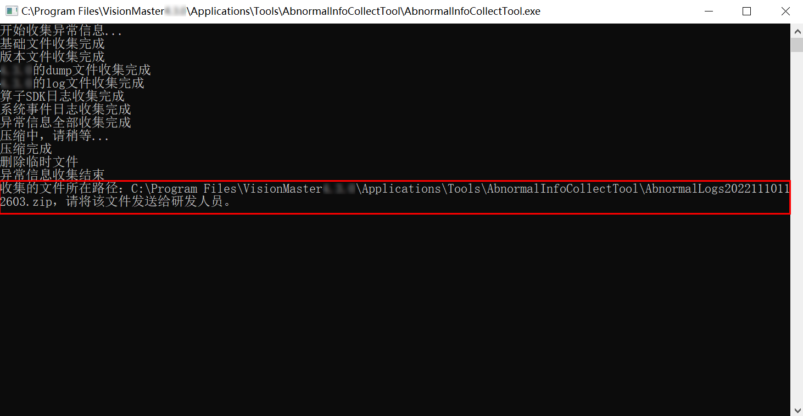

异常信息收集工具可收集电脑配置信息、log文件、VM版本、算子版本信息、算子SDK日志、dump和二次开发相关日志等，主要用于程序使用出现问题时收集相关信息并提供给技术人员进行问题排查。
异常信息收集工具名称为 AbnormalInfoCollectTool.exe ，所在路径为：..\Applications\Tools\AbnormalInfoCollectTool 。
工具使用方法：
-
双击打开 AbnormalInfoCollectTool.exe ，等待界面打印至收集结束。
-
根据最后提示的文件路径可获取压缩包，如下图所示。

- 注解
-
在使用过程中，当提示有文件被占用时，打开【任务管理器】根据提示的进程名称和ID手动关闭相关进程，再点击【重试】继续收集即可。
-
在收集VM其他版本（如VM4.0、VM4.1等）相关信息时，需拷贝 AbnormalInfoCollectTool 文件夹至对应程序路径下使用。
-
在收集二次开发日志时，需拷贝工具的整个文件夹到二次开发exe所在目录下使用。